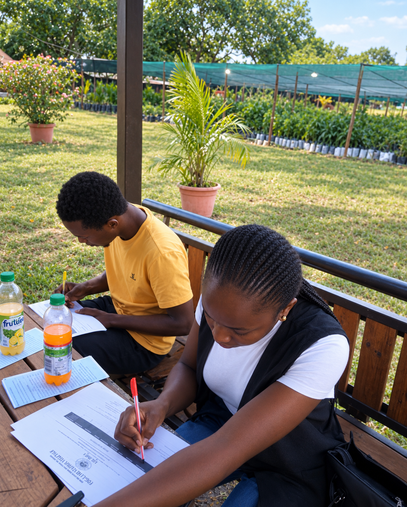
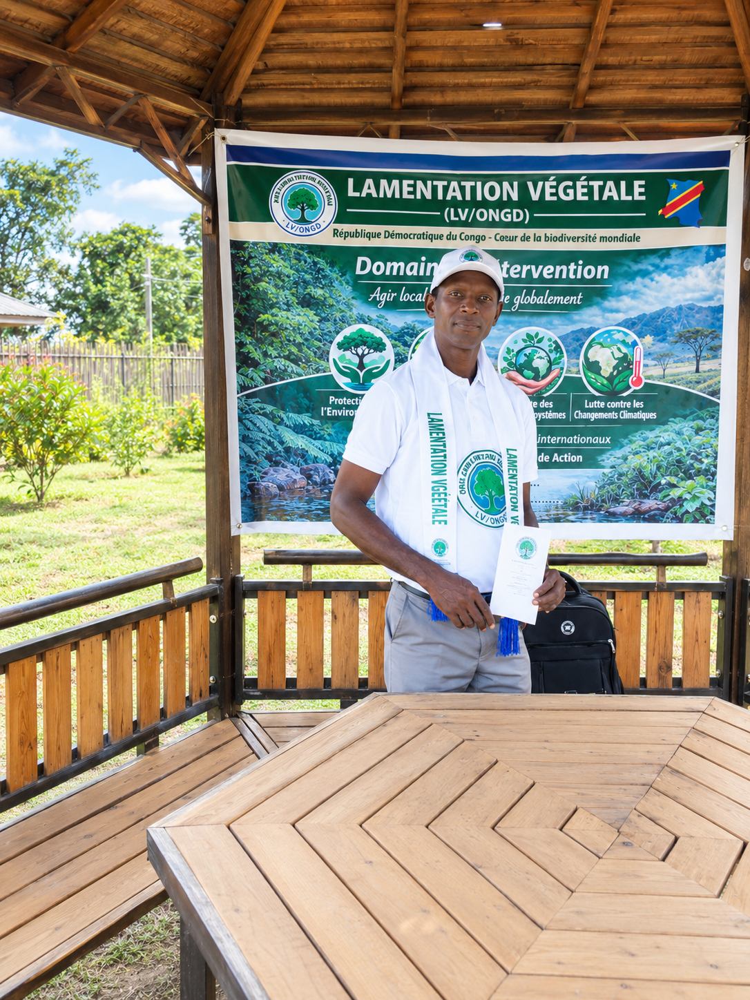
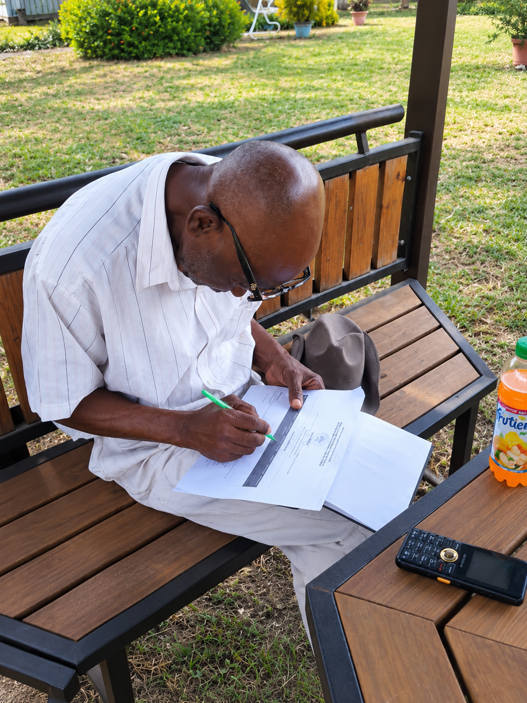

Nos 4 Domaines d'Intervention
L'ONG Lamentation Végétale concentre son action sur quatre axes stratégiques pour restaurer notre environnement et protéger notre biodiversité.
🌍 Protection de l'Environnement
Lutte contre la pollution, gestion des déchets, assainissement des quartiers et sensibilisation communautaire.
🦋 Conservation de la Biodiversité
Protection des espèces animales et végétales, préservation des écosystèmes naturels et reboisement.
💧 Gestion des Ressources Naturelles
Utilisation responsable de l'eau, du sol et des forêts pour les générations présentes et futures.
🌡️ Lutte contre le Changement Climatique
Réduction des émissions, adaptation aux changements climatiques, promotion des énergies propres.
Nos Projets sur le Terrain
Voici quelques-unes de nos actions concrètes menées avec nos bénévoles et partenaires.
🌱 Campagne de Reboisement
Chaque année, nous organisons des campagnes de plantation d'arbres pour lutter contre la déforestation et restaurer les sols dégradés. Notre objectif : 500 arbres plantés par an.
📚 Sensibilisation dans les Écoles
Nous intervenons dans les écoles pour éduquer les jeunes générations à la protection de l'environnement. Ateliers, conférences et activités pratiques sont au programme.
♻️ Gestion des Déchets
Nous organisons des journées de nettoyage et sensibilisons les communautés à la gestion responsable des déchets (recyclage, compostage).
Notre Galerie Photos
Découvrez en images nos actions sur le terrain.




📸 Les photos seront ajoutées progressivement. Revenez bientôt !